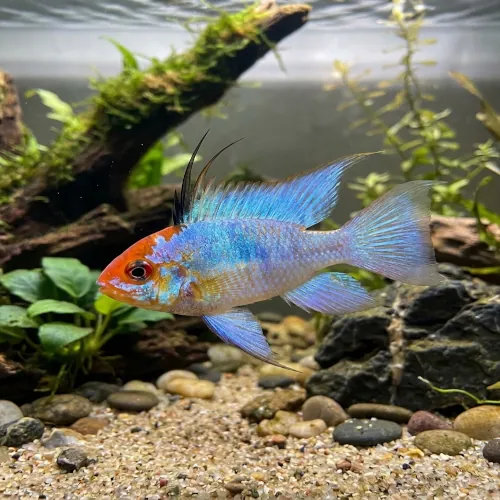

Nome popular principal
Ramirezi Electric Blue Koi
Ramirezi Electric Blue Koi, Ramirezi Koi, Electric Blue Koi Ram, Ramirezi Azul Koi
Ficha de peixe
Ciclídeos Anões
Uma das variações mais raras e chamativas do Ramirezi, unindo o azul-elétrico metálico a manchas branco-peroladas e detalhes alaranjados únicos em cada exemplar.

Nome popular principal
Ramirezi Electric Blue Koi, Ramirezi Koi, Electric Blue Koi Ram, Ramirezi Azul Koi
Nome científico
Nome técnico essencial para taxonomia, cruzamento de manejo e referência editorial consistente.
Dificuldade de manejo
Use este nível como referência inicial, sempre considerando volume, estabilidade e compatibilidade do aquário.
Seção 1
Seção 2
Seções 4 a 6
Ramirezi Electric Blue Koi tem hábito alimentar onívoro. Excelente. 1 a 2 vezes ao dia. Alimenta-se de grânulos finos que afundam lentamente e flocos de alta qualidade, aceitando com entusiasmo alimentos vivos e congelados como artêmia, dáfnias e bloodworms.
Machos possuem os primeiros raios da nadadeira dorsal mais alongados e pontiagudos; fêmeas adultas são ligeiramente menores, têm o abdômen mais arredondado e exibem coloração rosada ou alaranjada mais acentuada no ventre. Tipo de reprodução: Ovíparo. Dificuldade de reprodução: Intermediário. Forma casais monogâmicos que limpam uma pedra lisa ou folha larga para depositar os ovos, revezando-se na proteção e aeração da ninhada.
Alta. Substrato recomendado: Areia fina de rio com pedras lisas, troncos e plantas. Necessidade de esconderijos: Média. Aprecia aquários densamente plantados com areia fina no fundo, onde exerce o comportamento natural de peneirar o substrato em busca de alimento.
Seção 7
Por ser uma linhagem seletiva apurada, exige água quente (26°C a 30°C), muito bem filtrada e livre de oscilações bruscas de PH ou acúmulo de compostos nitrogenados.
Seção 8
O Electric Blue Koi apresenta manchas irregulares branco-peroladas pelo corpo e cabeça com tons alaranjados ou avermelhados, lembrando o padrão de uma carpa Koi, enquanto o Electric Blue comum é uniformemente azul.
Desenvolve-se melhor em água quente (26°C a 30°C), mole e ácida a neutra, com PH mantido idealmente entre 5.8 e 6.8.
O macho tem os primeiros raios da nadadeira dorsal mais altos e pontiagudos, enquanto a fêmea apresenta corpo mais compacto e abdômen mais volumoso com reflexos rosados.